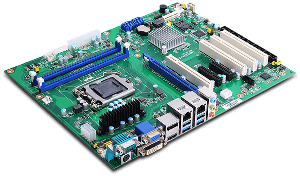
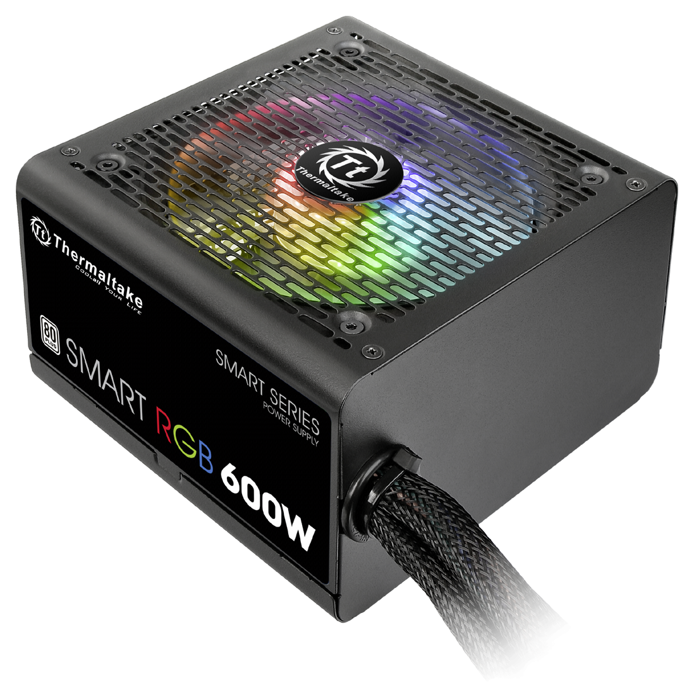
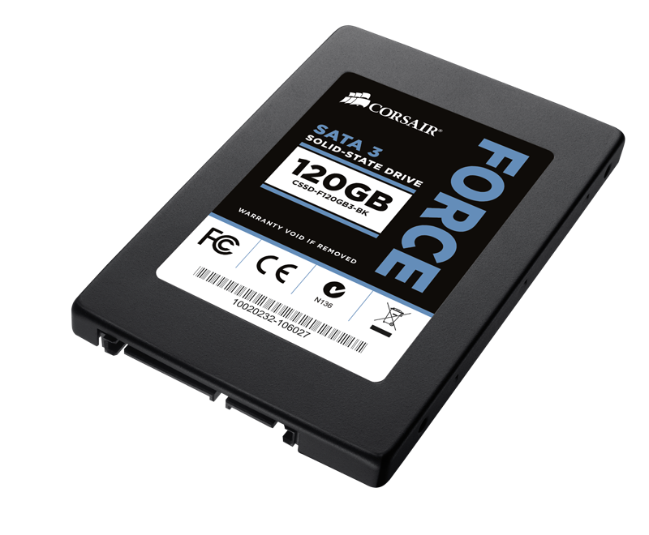

Комплектующие ПК - Просто!
Введение
Персональный кoмпьютep — портативная система, которую можно собрать под любые нужды, будь то игры, обработка графики и видео, или что-либо еще. Но из чего компьютер состоит, за что отвечают те, или иные детали? Какие комплектующие обязательны для его работы? Без каких компьютер может обойтись? Мы постарались предоставить ответы на все эти вопросы в простой форме, чтобы незнакомым с этой темой людям было легко разобраться.
Основные комплектующие ПК
Ниже мы расскажем об основных комплектующих, которые необходимы для работы вышего компьютера. Важно понимать что выбор комплектующих зависит от того, для чего вам нужен компьютер. К примеру, существуют видеокарты, созданные для майнинга, или для игр. Выбрав не тот "подвид", вы рискуете зря потратить деньги.
Итак, какие комплектующие необходимы в первую очередь, и как они выглядят?
Процессор – это устройство, отвечающее за обработку информации. Его называют по-разному: центральный процессор (ЦП) или центральное процессорное устройство (ЦПУ) или central processing unit (CPU), но все эти термины обозначают элемент, который является “мозгом” нашего компьютера.

Процессор представляет собой квадратную пластину со стороной около 5 сантиметров, с одной стороны которой находятся, похожие на ножки, коннекторы. С их помощью он прикрепляется к материнской плате – специальному элементу для установки дополнительных расширений.
Материнская плата – связывает все комплектующие компьютера между собой и питает их. Она выполняет много процессов и объединяет всю систему. 
Материнская плата – это просто большая печатная плата с множеством контактов и сотнями, если не тысячами, проводников, соединяющих все узлы и компоненты. На ней присутствует разъем для подключения процессора, так называемый сокет. У процессора и материнской платы сокеты обязательно должны совпадать. Так же есть разъемы для оперативной памяти, видеокарт и запоминающих устройств.
Оперативная память – в процессе работы память выступает в качестве
буфера между накопителем и процессором, то есть данные сперва считываются с жесткого
диска (или другого накопителя) в оперативную память и уже затем обрабатываются центральным процессором.

Физически, оперативная память представляет собой набор микросхем припаянных к плате. Оперативная память может быть разных типов, DDR1, DDR2 и так далее, вплоть до DDR5. Типы отличаются по мощности, чем больше цифра на конце памяти, тем лучше. Стоит обратить внимание, что у процессоров и матенских плат поддерживается только один тип памяти, так что ОП стоит выбирать учитывая данный факт. Так же, материнская плата может не поддерживать оперативную память слишком большой, или же маленькой мощности, на это тоже стоит обратить внимание.
Блок питания – устройство, предназначенное для формирования напряжения, необходимого системе, из напряжения электрической сети. К примеру, переменный ток сети 220 В, а процессору необходимо напряжение 50 В. Преобразованием из 220 В в 50 В и занимается блок питания. 
Блок питания представляет собой небольшой, довольно увесистый, параллелепипед. С одной стороны из него выходит пучок проводов, на более дорогих моделях на месте этого пучка находятся разъемы для подключения различных проводов, чтобы пользователь подключил только те, которые ему необходимы. С другой стороны есть перфорация корпуса и вентилятор, предназначенный для охлаждения БП. С еще одной стороны находится разъем для подключения к сети и кнопка вкл/выкл. Мощность блока питания должна быть желательно больше суммы параметров энергопотребления всех комплектующих примерно на 100W.
Видеокарта – устройство, преобразующее графический образ, хранящийся как содержимое памяти компьютера,
в форму, пригодную для дальнейшего вывода на экран монитора.

Видеокарта выглядит как печатная плата, оборудованная радиатором и одним, или несколькими вентиляторами. На задней стороне расположены разъемы для подключения к устройствам вывода. Подключается видеокарта к материнской плате с помощью разъема PCI, и иногда к блоку питания проводами на 6 pin, в зависимости от мощности видеокарты.
Запоминающие устройства – устройства, предназначенные для записи и хранения данных.
Наиболее распространенными видами таких устройств являются жесткие диски(HDD) и твердотельные накопители(SSD).

HDD - это запоминающее устройство, основанное на принципе магнитной записи. На сегодняшний день HDD является одним из наиболее распространенных типов памяти. Технология HDD или жесткий диск – это наиболее распространенный тип перезаписываемой памяти.

SSD - современный твердотельный накопитель, сменивший на посту хранения данных старый добрый HDD. В жестком диске информация хранится на нескольких дисках с намагниченной поверхностью, по которой скользит считывающая головка. В SSD вместо них используются микросхемы, благодаря чему твердотельные накопители в разы быстрее, но и дороже, нежели жесткие диски.